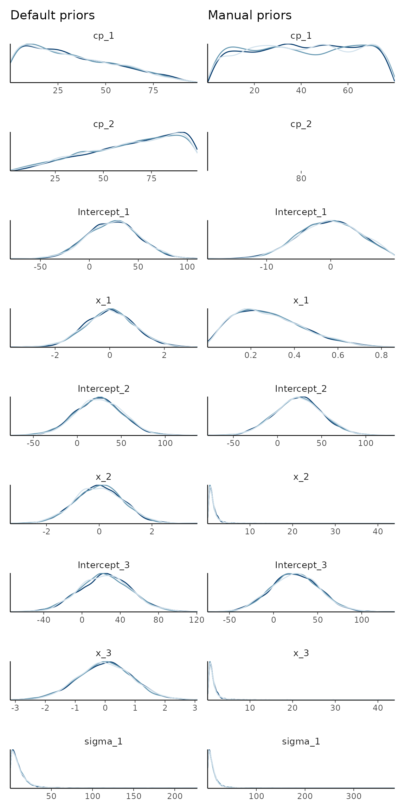
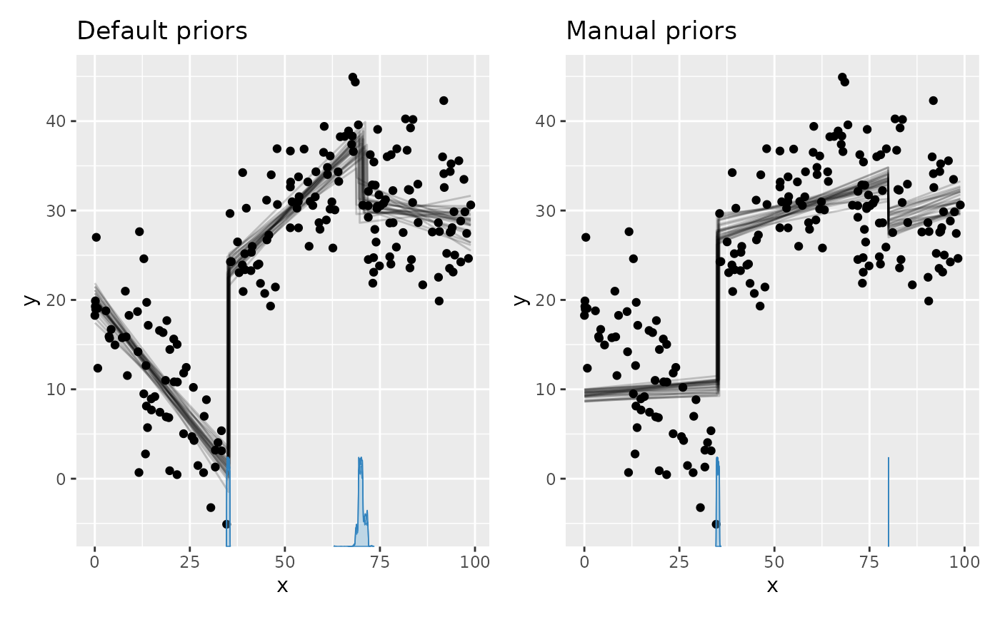
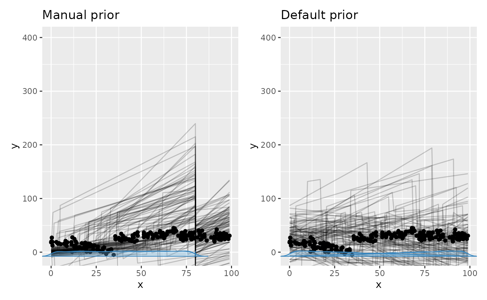

NOTE: the JAGS-specific prior interface below is likely to be deprecated in the future, when additional backends are added beyond JAGS.
This article is about setting your own priors.
To learn more about priors when you do not set them
yourself, read more about the mcp default priors. Briefly,
mcp assigns default priors to all parameters that you do
not set. These are the conventional defaults of rstanarm
for intercepts and coefficients and of brms for scale
parameters, with mcp-specific defaults for change points
and autocorrelation. Inspect them using
prior_summary(fit).
Setting a prior
mcp takes priors in the form of a named list. The names
are the parameter names, and the values are distribution strings, fixed
values, or the names of other parameters. Here is a fairly complicated
example, to demonstrate the various ways priors can be used:
model = list(
y ~ 1 + x, # Intercept_1 + x_1
~ 1 + x, # cp_1, Intercept_2, and x_2
~ 1 + x # cp_2
)
prior = list(
Intercept_1 = "dnorm(0, 5) T(, 10)", # Intercept; less than 10
x_1 = "dbeta(2, 5)", # slope: beta with right skew
cp_1 = "dnorm(30, 10)", # change point around 30 (and before cp_2)
x_2 = "dt(0, 1, 3) T(x_1, )", # slope 2 > slope 1 and t-distributed
cp_2 = 80, # A constant (set; not estimated)
x_3 = "x_2" # same slope as x_2 (use same() instead; see below)
# Intercept_2 and Intercept_3 not specified. Use default.
)Distribution strings use JAGS names and argument order, including
T() truncation, so JAGS distributions are generally allowed
(see the JAGS
user manual). However, they are not JAGS code: mcp uses
conventional scales instead of JAGS precision, i.e., SD for
dnorm(), SD on the log scale for dlnorm()
(sdlog in stats::dlnorm()), and scale for
dt(), ddexp(), and dlogis(). When
generating JAGS code, mcp converts these to inverse
variance for dnorm(), dt(), and
dlnorm(), and inverse scale for ddexp() and
dlogis(). You can inspect the translation by comparing
fit$prior with fit$jags_code.
Other notes:
Change points are always ordered (
cp_1 < cp_2 < ...), whatever their priors. See priors on change points.mcpallows inserting data-dependent terms: for example,min(x),max(x),mean(y),median(y),sd(y),mad(y),max(x) - min(x),n_segments(), andn_cp().mcpresolves these expressions before generating JAGS code. The oldermcpv0.3.4 uppercase constants (MINX,MAXX, and so on) remain temporarily supported with a deprecation warning.You can fix any parameter to a specific value. Simply set it to a numerical value (as
cp_2above). A constant is a 100% prior belief in that value, and it will therefore not be estimated.To reuse a coefficient in a later segment, prefer
same()in the model, e.g.,~ 1 + same(x)in segment 3. This reusesx_2instead of estimatingx_3. Equating parameters in the prior (x_3 = "x_2"above) gives the same fit but keepsx_3as a duplicate. Read more aboutsame()in Understanding mcp formulas.You can write deterministic expressions such as
x_3 = "x_2 + 5 - cp_1/10". Sincex_3is now deterministic givenx_2andcp_1, this leaves one fewer free parameter to estimate.
Let us see the priors after running them through mcp and
compare to the default priors:
library(mcp)
df_dummy = data.frame(x = 1:100, y = 1:100)
empty_manual = mcp(model, data = df_dummy, prior = prior, sample = FALSE)
empty_default = mcp(model, data = df_dummy, sample = FALSE)
# Inspect resolved priors and their bounds
prior_summary(empty_manual) # For more details: add verbose = TRUE## # A tibble: 9 × 5
## parameter segment dpar prior bounds
## <chr> <int> <chr> <chr> <chr>
## 1 cp_1 2 NA normal(mean = 30, sd = 10) [1, 100], ordered
## 2 cp_2 3 NA 80 none
## 3 Intercept_1 1 mu normal(mean = 0, sd = 5) [-Inf, 10]
## 4 x_1 1 mu beta(shape1 = 2, shape2 = 5) [0, 1]
## 5 Intercept_2 2 mu normal(mean = 50.5, sd = 72.529) none
## 6 x_2 2 mu student_t(df = 3, location = 0, scale = 1) [x_1, Inf]
## 7 Intercept_3 3 mu normal(mean = 50.5, sd = 72.529) none
## 8 x_3 3 mu x_2 none
## 9 sigma_1 1 sigma student_t(df = 3, location = 0, scale = 37.1) [0, Inf]
prior_summary(empty_default) # For more details: add verbose = TRUE## # A tibble: 9 × 5
## parameter segment dpar prior bounds
## <chr> <int> <chr> <chr> <chr>
## 1 cp_1 2 NA uniform(min = 1, max = 100) [1, 100], ordered
## 2 cp_2 3 NA uniform(min = 1, max = 100) [1, 100], ordered
## 3 Intercept_1 1 mu normal(mean = 50.5 - x_1 * 1, sd = 72.529) none
## 4 x_1 1 mu normal(mean = 0, sd = 2.5) none
## 5 Intercept_2 2 mu normal(mean = 50.5, sd = 72.529) none
## 6 x_2 2 mu normal(mean = 0, sd = 2.5) none
## 7 Intercept_3 3 mu normal(mean = 50.5, sd = 72.529) none
## 8 x_3 3 mu normal(mean = 0, sd = 2.5) none
## 9 sigma_1 1 sigma student_t(df = 3, location = 0, scale = 37.1) [0, Inf]Now, let’s simulate some data from model. The following
priors are “at odds” with the actual data so as to show their
effect.
df = data.frame(x = runif(200, 0, 100), y = 1) # 200 datapoints between 0 and 100
df$y = empty_default$simulate(empty_default, df,
Intercept_1 = 20, Intercept_2 = 22, Intercept_3 = 30, # intercepts
x_1 = -0.5, x_2 = 0.5, x_3 = 0, # slopes
cp_1 = 35, cp_2 = 70, # change points
sigma = 5)
head(df)## x y
## 1 91.48060 36.00483
## 2 93.70754 35.22376
## 3 28.61395 0.67698
## 4 83.04476 39.24241
## 5 64.17455 33.25341
## 6 51.90959 30.98237Sample the prior and posterior.
future::plan(future::multisession, workers = 3)
fit_manual = mcp(model, data = df, sample = "both", prior = prior)
fit_default = mcp(model, data = df, sample = "both")First, let’s look at the priors side by side. Notice the use of
prior = TRUE to show prior draws. This works in
plot(), plot_pars(), and
summary() among others.
library(ggplot2)
pp_default = plot_pars(fit_default, type = "dens_overlay", prior = TRUE, npars = NULL) +
ggtitle("Default priors")
pp_manual = plot_pars(fit_manual, type = "dens_overlay", prior = TRUE, npars = NULL) +
ggtitle("Manual priors")
pp_default + pp_manual
Here are the resulting posterior fits:
plot_default = plot(fit_default) + ggtitle("Default priors")
plot_manual = plot(fit_manual) + ggtitle("Manual priors")
plot_default + plot_manual
We see the effects of the priors:
- The intercept
Intercept_1was truncated to be below 10. - The slope
x_1is restricted to the bounds ofdbeta(), i.e., between 0 and 1. - The slopes
x_2andx_3were forced to be identical. - The change point
cp_2was a constant, so there is no uncertainty there.cp_1is still ordered before it, i.e., its prior isdnorm(30, 10)restricted tomin(x) < cp_1 < 80.
Adding verbose = TRUE reveals full details including the
rule descriptions, parameter classifications (kind), and
whether each prior came from the user or data-calibrated defaults:
prior_summary(fit_manual, verbose = TRUE)## # A tibble: 9 × 9
## parameter segment dpar prior bounds rule description source kind
## <chr> <int> <chr> <chr> <chr> <chr> <chr> <chr> <chr>
## 1 cp_1 2 NA normal(mean = 30, sd = 10) [0.02389, 98.889], ordered normal(mean = 30, sd = 10) User-specified prior, truncated to the observed range of x, restricted to ordered change points user distribution
## 2 cp_2 3 NA 80 none 80 Fixed at 80 user constant
## 3 Intercept_1 1 mu normal(mean = 0, sd = 5) [-Inf, 10] normal(mean = 0, sd = 5) User-specified prior user distribution
## 4 x_1 1 mu beta(shape1 = 2, shape2 = 5) [0, 1] beta(shape1 = 2, shape2 = 5) User-specified prior user distribution
## 5 Intercept_2 2 mu normal(mean = 24.322, sd = 26.856) none normal(mean = mean(y), sd = 2.5 * sd(y)) Mean intercept (rstanarm default) default distribution
## 6 x_2 2 mu student_t(df = 3, location = 0, scale = 1) [x_1, Inf] student_t(df = 3, location = 0, scale = 1) User-specified prior user distribution
## 7 Intercept_3 3 mu normal(mean = 24.322, sd = 26.856) none normal(mean = mean(y), sd = 2.5 * sd(y)) Mean intercept (rstanarm default) default distribution
## 8 x_3 3 mu x_2 none x_2 Same value as x_2 user alias
## 9 sigma_1 1 sigma student_t(df = 3, location = 0, scale = 9.9) [0, Inf] student_t(df = 3, location = 0, scale = max(2.5, round(mad(y), 1))) Positive residual SD calibrated on the response scale default distributionThis is a contrived example. Usually setting priors manually aims to sample the “correct” posterior.
Prior predictive checks
Prior predictive checks are a great way to ensure that the priors are
meaningful before fitting to data. Simply set
sample = "prior". Let us do it for the manual and default
priors above to compare their prior predictive space:
# Sample priors
fit_pp_manual = mcp(model, data = df, prior = prior, sample = "prior")
fit_pp_default = mcp(model, data = df, sample = "prior")
# Plot it
plot_pp_manual = plot(fit_pp_manual, lines = 100, prior = TRUE) + ylim(c(-400, 400)) + ggtitle("Manual prior")
plot_pp_default = plot(fit_pp_default, lines = 100, prior = TRUE) + ylim(c(-400, 400)) + ggtitle("Default prior")
plot_pp_manual + plot_pp_default # using patchwork
You can see how the manual priors force strictly positive slopes (x_2 > x_1 > 0) that compound to span a much wider vertical range than the defaults, alongside an abrupt concerted change at the fixed change point x = 80. In contrast, the default priors are centered on the observed data, with zero-centered slopes and change points distributed smoothly across the x range.
Priors on change points
Change points are always ordered,
cp_1 < cp_2 < ... < cp_n. Without this, the
segments could swap places between draws (“label switching”), and the
change points would not be identifiable. In mcp,
each change point keeps its specified prior, restricted to
ordered change points. cp_1 always has the prior
specified for cp_1. When change points have group-level
deviations, their locations are additionally ordered within every
group.
The default prior on change points is a flat Dirichlet prior on the segment lengths, also known as “uniform order statistics”. The article on default priors describes it and its math.
Inspecting priors on change points
-
fit$priorandprior_summary(fit)show the prior specified for each change point. The default isdunif(min(x), max(x))on each change point, i.e., a uniform distribution on the observed range ofpar_x. Infit$prior,min(x)andmax(x)are written ascp_0andcp_K, e.g.,cp_3with two change points.prior_summary(fit)shows them as numbers, and itsboundscolumn marks change points as “ordered”.prior_summary(fit, verbose = TRUE)describes which restrictionsmcpapplied. -
plot_pars(fit, prior = TRUE)shows the marginal priors, i.e., after the ordering. Where the specified priors overlap, the marginal priors differ from them. For example, the default priors oncp_1andcp_2in the plot above are not flat but triangular, becausecp_1must be beforecp_2. Usemcp(..., sample = "prior")orsample = "both"to get prior draws. -
fit$jags_codeshows how JAGS samples them. See From formulas to sampler code.
Setting priors on change points
You can set priors on change points as shown in the initial example. Here are the rules:
-
Lower and upper bounds. Priors without
dunif()orT()are truncated to the observed range of x, e.g.,dnorm(30, 10)becomesdnorm(30, 10) T(min(x), max(x)). The lower and upper bounds that you set indunif()orT()are used unchanged, also beyond the data, e.g., to place a change point in the future as in this forecasting example. JAGS cannot truncatedunif(), so set its bounds as its arguments instead of usingT(). -
Minimum segment lengths. To make the segment
between
cp_1andcp_2at least 20 long, write the previous change point plus the length as the lower bound:cp_2 = "dunif(cp_1 + 20, max(x))"orcp_2 = "dnorm(70, 10) T(cp_1 + 20, )". An empty upper bound defaults tomax(x). Like the ordering, the minimum segment length is a restriction, not JAGS’s renormalizing truncationT(cp_1 + 20, ). Other references to change points in the lower and upper bounds are errors, because change points are already ordered. A lower bound of just the previous change point, e.g.,dunif(cp_1, max(x))as inmcpv0.3, is not needed and gives a warning. -
Fixed change points such as
cp_2 = 80are also ordered, i.e.,cp_1stays below 80. -
Conditional priors. Priors can refer to other
change points in their distribution parameters, e.g.,
cp_3 = "dnorm(cp_2 + 30, 10)". Each change point then has its prior given the change points it refers to, still restricted to ordered change points. If JAGS stops with “Slicer stuck at value with infinite density”, the conditional prior has (practically) no probability within its lower and upper bounds for some values of the change points it refers to. Widen the prior or its bounds. -
Regular spacing.
cp_1 = "dirichlet(2)"sets a Dirichlet prior with \alpha = 2 on all change points, which makes short segments less likely and so favors evenly spaced change points away from the ends of the observed range. \alpha = 1 is the default prior. All change points share the same \alpha, so it cannot be combined with other priors on change points. See the math. -
Initial values. All chains start at the same,
equally spaced change points, moved inside the bounds of their priors if
needed. Set other initial values using, e.g.,
mcp(..., inits = list(cp_1 = 30)), as long as they are ordered. More details on initialization in the implementation article.
JAGS code
Here is the JAGS code for fit_manual:
fit_manual$jags_code## model {
## # Change points
## cp_0 = min(x)
## cp_1 ~ dnorm(30, 1/(10)^2) T(cp_0,cp_3) # User-specified prior, truncated to the observed range of x, restricted to ordered change points
## cp_2 = 80 # Fixed at 80
## cp_3 = max(x)
## cp_order_ ~ dbern(step(cp_2 - cp_1)) # Ordered change points
##
## # Priors for population-level effects
## Intercept_1 ~ dnorm(0, 1/(5)^2) T(,10) # User-specified prior
## x_1 ~ dbeta(2, 5) # User-specified prior
## Intercept_2_end_ ~ dnorm(24.321850954171083 + x_2 * (cp_2 - cp_1), 1/(26.856367009148308)^2) # Mean intercept (rstanarm default); sampled as the value at the segment end
## Intercept_2 = Intercept_2_end_ - (x_2 * (cp_2 - cp_1))
## x_2 ~ dt(0, 1/(1)^2, 3) T(x_1,) # User-specified prior
## Intercept_3_end_ ~ dnorm(24.321850954171083 + x_3 * (cp_3 - cp_2), 1/(26.856367009148308)^2) # Mean intercept (rstanarm default); sampled as the value at the segment end
## Intercept_3 = Intercept_3_end_ - (x_3 * (cp_3 - cp_2))
## x_3 = x_2 # Same value as x_2
## sigma_1 ~ dt(0, 1/(9.9)^2, 3) T(0,) # Positive residual SD calibrated on the response scale
##
## # Model and likelihood
## for (i_ in 1:length(x)) {
## # par_x local to each segment
## x_local_1_[i_] = min(x[i_], cp_1)
## x_local_2_[i_] = min(x[i_], cp_2) - cp_1
## x_local_3_[i_] = min(x[i_], cp_3) - cp_2
##
## # Formula for mu
## link_mu_[i_] =
## (x[i_] >= cp_0) * (x[i_] < cp_1) * inprod(rhs_matrix_[i_, c(1)], c(Intercept_1)) * 1 +
## (x[i_] >= cp_0) * (x[i_] < cp_1) * inprod(rhs_matrix_[i_, c(2)], c(x_1)) * x_local_1_[i_] +
## (x[i_] >= cp_1) * (x[i_] < cp_2) * inprod(rhs_matrix_[i_, c(3)], c(Intercept_2)) * 1 +
## (x[i_] >= cp_1) * (x[i_] < cp_2) * inprod(rhs_matrix_[i_, c(4)], c(x_2)) * x_local_2_[i_] +
## (x[i_] >= cp_2) * inprod(rhs_matrix_[i_, c(5)], c(Intercept_3)) * 1 +
## (x[i_] >= cp_2) * inprod(rhs_matrix_[i_, c(6)], c(x_3)) * x_local_3_[i_]
##
## # Formula for sigma
## link_sigma_[i_] =
## (x[i_] >= cp_0) * inprod(rhs_matrix_[i_, c(7)], c(sigma_1)) * 1
##
## # Likelihood for family = gaussian()
## mu_[i_] = link_mu_[i_]
## sigma_[i_] = max(1e-05, link_sigma_[i_])
## y[i_] ~ dnorm(mu_[i_], 1 / sigma_[i_]^2)
## }
## }